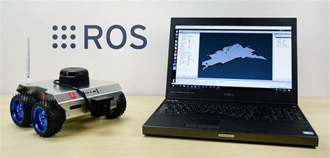

"When you run an application in Distrobox, it mainly sees your actual home directory".
"Outside of your home directory, it sees the container’s filesystem."
What those two corresponds ?
Use containers highly integrated with the hosts
and have access to,
You can even run entire DE (GNOME, Plasma, …)!
a simplified way using POSIX sh and aiming at broader compatibility.
